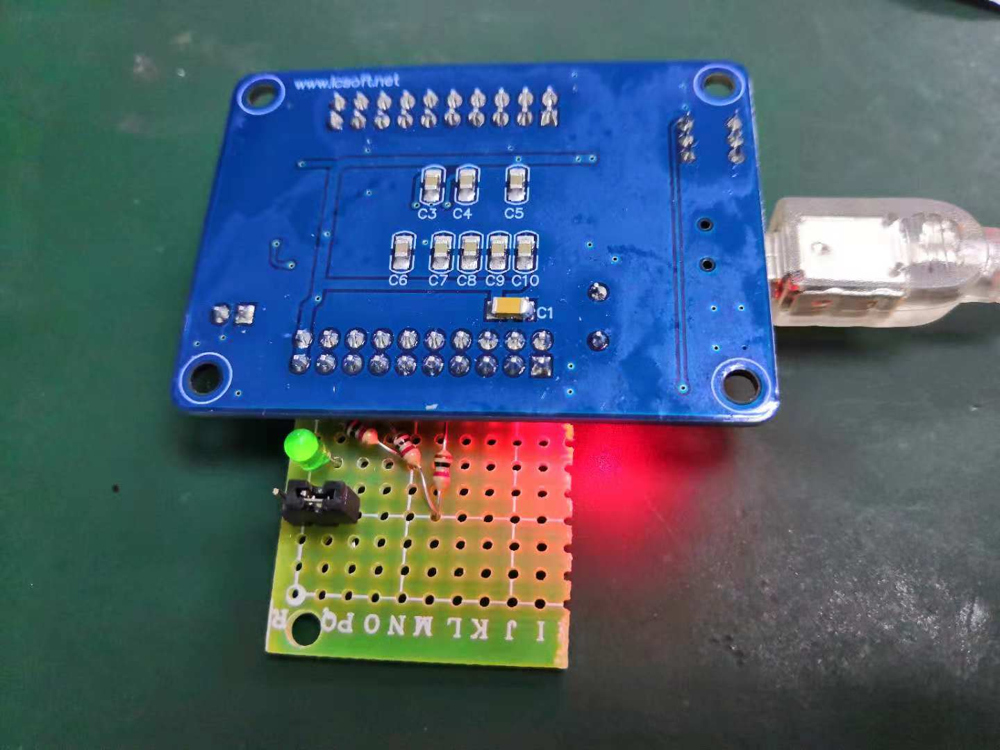
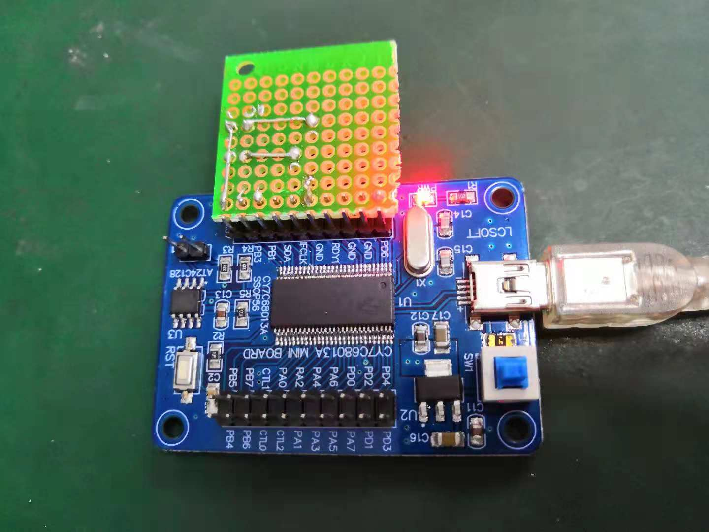
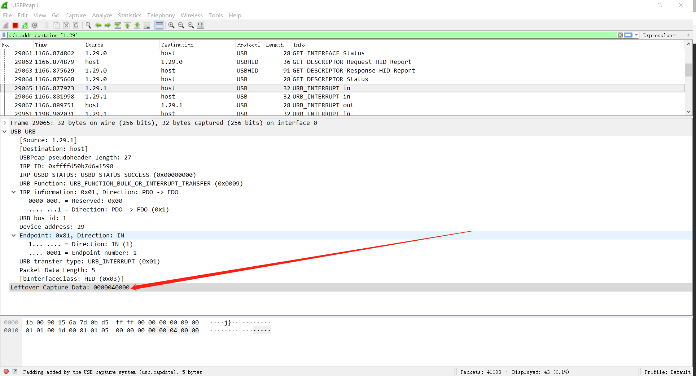

HID Keyboard Modify
USB控制器会采用伪中断进行对设备进行轮询，Wireshare只有在有数据传输才会在总线上有Interrupt IN包，也就是说如果设备没有准备好数据，那么USB控制器是不会去轮询的。
Hardware Modify
PB0引脚接一个插件跳冒，因为没找到按钮，用跳冒来模拟按键按下；PB2引脚用于点亮灯，用于指示一些信息；
 
Code Example
[...省略]
#define KEY_DOWN 0x01
#define KEY_UP 0x02
//-----------------------------------------------------------------------------
// Task Dispatcher hooks
// The following hooks are called by the task dispatcher.
//-----------------------------------------------------------------------------
void TD_Init(void) // Called once at startup
{
leds = 0xFF;
oldbuttons = 0xFF;
keyStatus = KEY_UP; // current key status
EP1OUTCFG = 0xB0; // valid, interrupt
EP1INCFG = 0XB0; // valid, interrupt
EP2CFG = EP4CFG = EP6CFG = EP8CFG = 0; // disable unused endpoints
OEB = 0x04;
IOB = 0x00;
// init button status
buttons = IOB;
buttons &= 0x01;
oldbuttons = buttons;
}
void TD_Poll(void) // Called repeatedly while the device is idle
{
if( !(EP1INCS & bmEPBUSY) ) // Is the IN1BUF available,
{
buttons = PB0;
buttons &= 0x01;
if (((oldbuttons - buttons) != 0) && (keyStatus == KEY_UP) && (PB0 == 1)) //Change in button state
{
EP1INBUF[2] = 4;
EP1INBUF[0] = 0;
EP1INBUF[1] = 0;
EP1INBUF[3] = 0;
EP1INBUF[4] = 0;
EP1INBC = 5;
keyStatus = KEY_DOWN;
} else if (((oldbuttons - buttons) == 0) && (keyStatus == KEY_DOWN) && (PB0 == 0)){
EP1INBUF[2] = 0;
EP1INBUF[0] = 0;
EP1INBUF[1] = 0;
EP1INBUF[3] = 0;
EP1INBUF[4] = 0;
EP1INBC = 5;
keyStatus = KEY_UP;
}
oldbuttons = buttons;
}
if( !(EP1OUTCS & bmEPBUSY) ) // Is there something available
{
PB2 = ~PB2;
EP1OUTBC = 0; //Rearm endpoint buffer
}
}
[...省略]
Wireshark Capture
